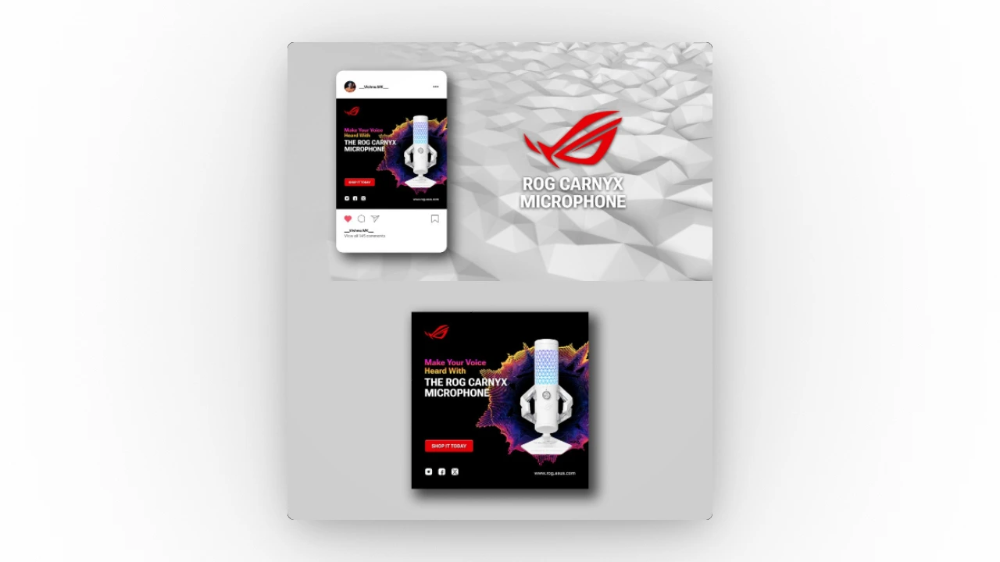
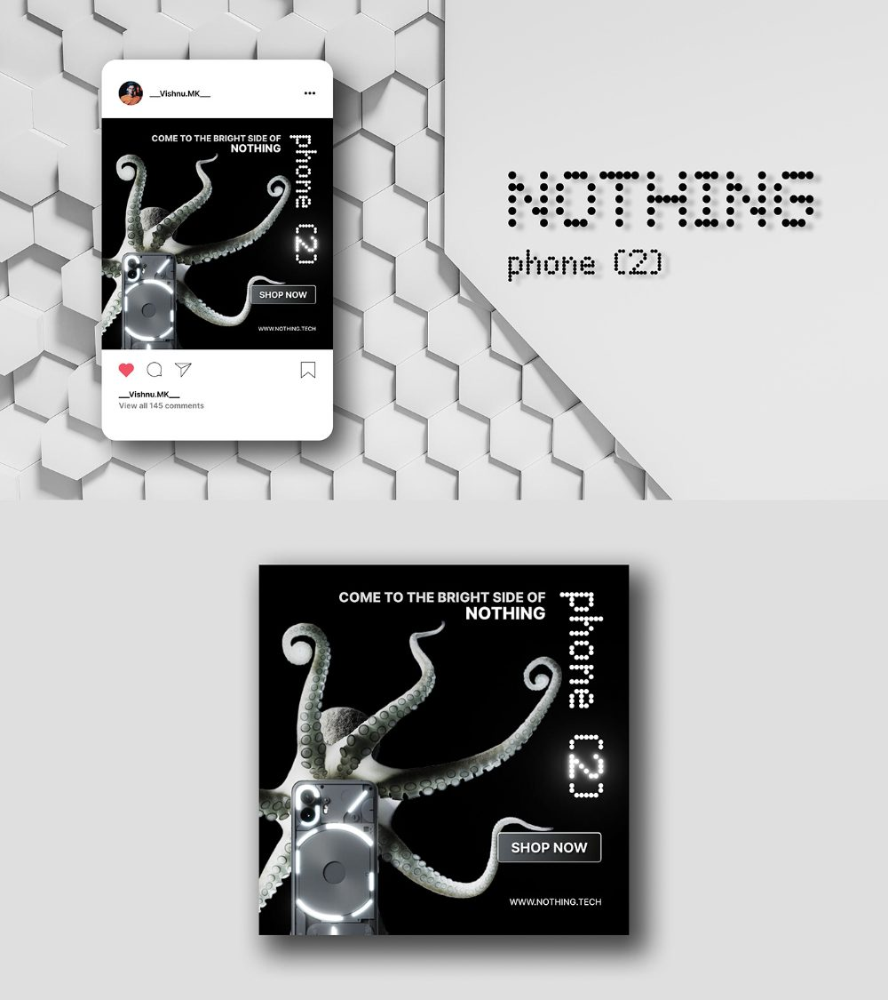
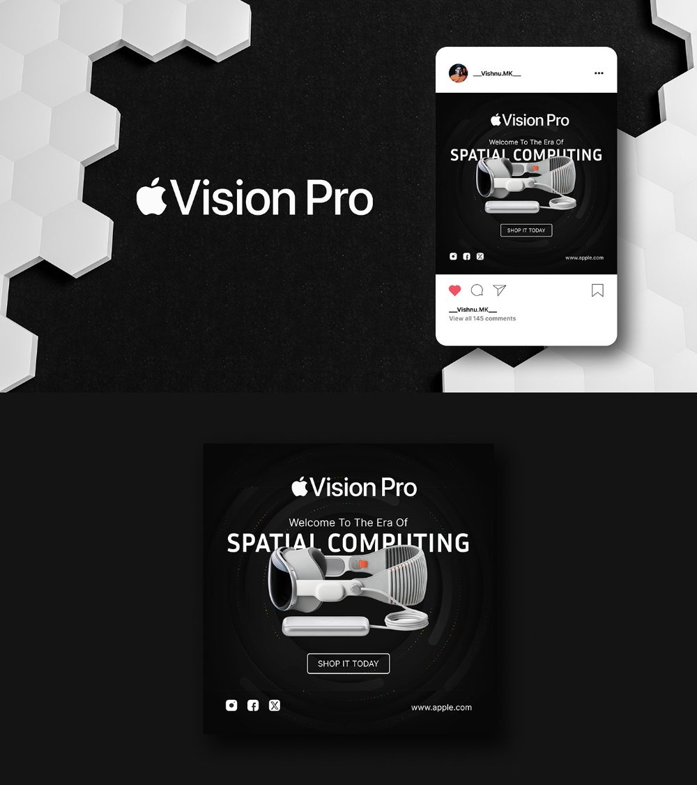
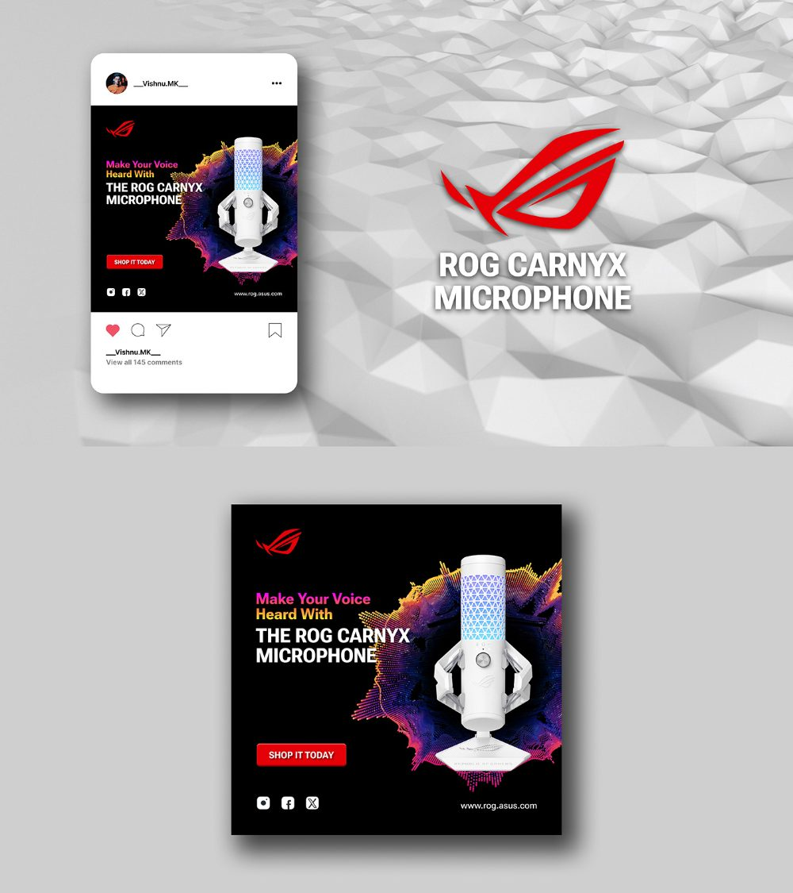
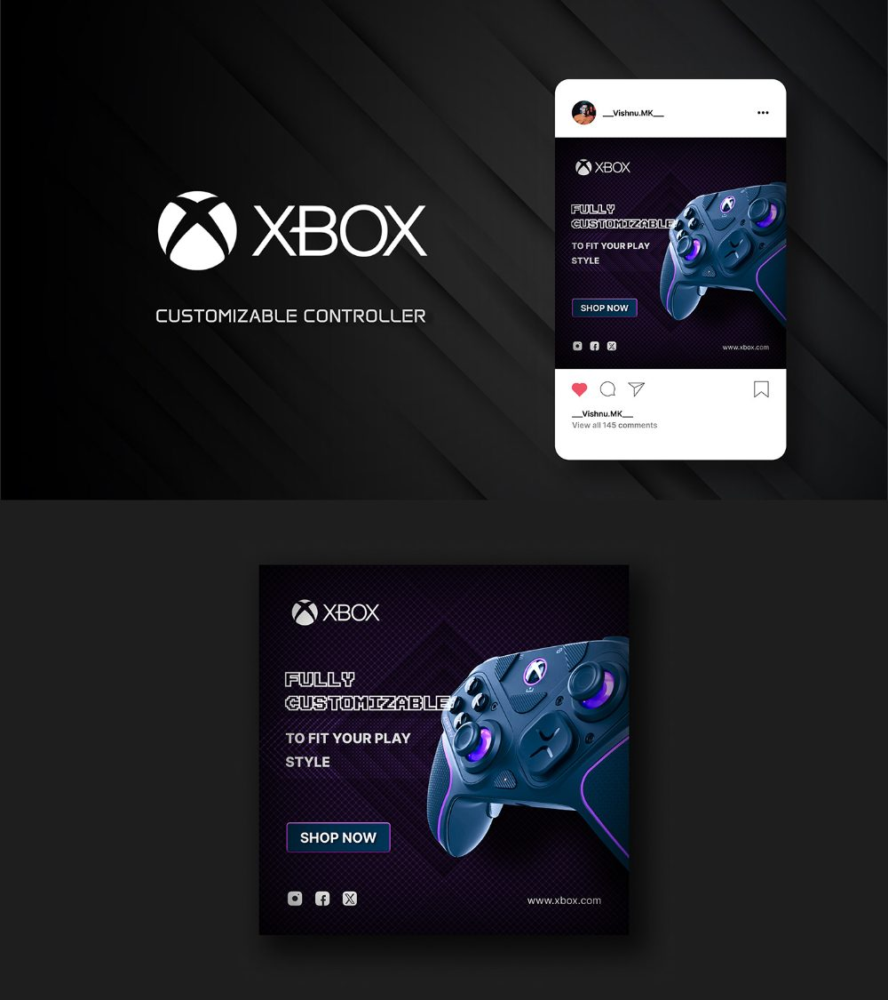

Borrow the brand’s type
Nothing’s dot-matrix lettering, Xbox’s pixel headline and Apple’s clean wordmark make each post read as the brand at a glance.
Concept social posts that borrow each brand’s own visual language — and keep the product the hero.

Would this stop someone mid-scroll?
A set of concept posts for technology products, each designed as a single square post and shown in an Instagram frame to judge it where it would actually be seen.
The challenge in each was the same: make one product the hero, match the brand’s own look, and give the viewer a reason to stop and a clear next step.
Each post is built to be read in the order the eye moves through it.
Nothing’s dot-matrix lettering, Xbox’s pixel headline and Apple’s clean wordmark make each post read as the brand at a glance.
Each post has a single headline and a single product, set against a dark ground so it stands out in the feed.
Every post was checked inside an Instagram frame, not just as a flat square.
Each concept shown in an Instagram frame and as the finished post.




Want the full walkthrough of this project? Let’s talk